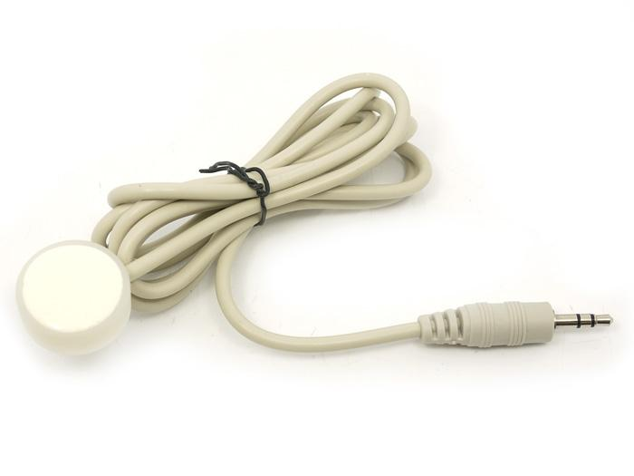
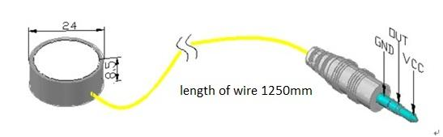
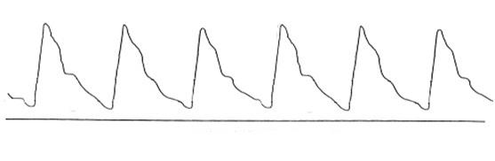
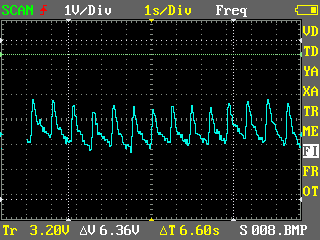
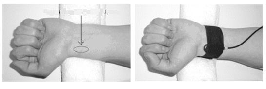

This page is in processing now.
It is a long life piezoelectric pulse sensor with signal filtering, conditioning and temperature compensation circuit. The high integration makes it very stable, reliable and extremely easy to use. It outputs the pulse wave which is voltage analog signal. It could be used in pulse wave analysis system, and even the Arduino based system.
Model: SEN42758M

It can be used in pulse wave analysis systems (herbalist doctor pulse manifestation testing, non-invasive cardiovascular function testing system, pregnancy-induced hypertension syndrome testing system, etc). You can integrated it into the Arduino based system.
The warnings and wrong operations possible cause dangerous.
It is the schematic, the circuit about Eagle resource like .pdf should linked here in order to avoid memory exhausted.

The typical output waveform of the pulse wave, which varies from person to person.

The testing output wave form is shown as below.

How to fix the pulse sensor? As shown below:

All the components used to produce the product.
Please list your question here:
If you have questions or other better design ideas, you can go to our forum or wish to discuss.
Bug Tracker is the place you can publish any bugs you think you might have found during use. Please write down what you have to say, your answers will help us improve our products.
The Additional Idea is the place to write your project ideas about this product, or other usages you've found. Or you can write them on Projects page.
Click here to buy Piezoelectric pulse sensor on SEEED bazzar: http://www.seeedstudio.com/depot/piezoelectric-pulse-sensor-p-832.html?cPath=144_146&zenid=cee0a25bbc9ba561a121caf3e07d17a3
Other related products and resources.
This documentation is licensed under the Creative Commons Attribution-ShareAlike License 3.0 Source code and libraries are licensed under GPL/LGPL, see source code files for details.
Links to external webpages which provide more application ideas, documents/datasheet or software libraries
Copyright (c) 2008-2016 Seeed Development Limited (www.seeedstudio.com / www.seeed.cc)